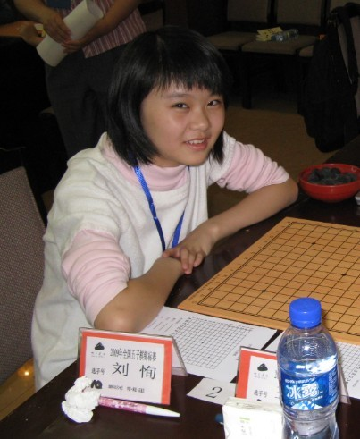

各界MM汇总（仅为一家之言）
#1 各界MM汇总（仅为一家之言） 作者：山城刀客 发表时间：2012-7-15 15:33:08
连珠界10大MM
1.茗奕小刀
刀姐，籍贯四川，网络最知名女棋手，关于她的美以及她的棋，众人皆知，无需所言。
2.李非
网名小龙女，网络上流传五子棋第一女高手 ， 籍贯天津，早期在联众游戏极具传奇色彩，棋力较高。在现实里多次参加五子棋比赛，曾获第五届全国五子棋邀请赛女子组第一名。07年全国赛A组第10，升四段。
3.顾婉卿
毕业于上海东华大学 ， 有“小小顾”之称，是上海五子圈中著名的三顾之一 。 2001年，顾婉卿开始接触现代五子棋，是上海第三代棋手。 2002年2月，获首届 上海 “新人王战”第8名；10月，10月，获第五届“友情杯”赛暨“新秀杯”级位组第4名。 2003年11月，获东华大学举办“经纬杯”第一届上海高校赛亚军。 2004年8月，获“宁海杯”第二届 浙江 邀请赛女子组亚军。 2005年8月，跨组参加“弈缘杯”第三届浙江邀请赛。 2006年5月，获第四届“团结杯”赛第8名；8月，获第四届浙江邀请赛女子组第4名；10月，获第五届全国邀请赛女子成年组亚军。 2011 年 11 月，第 2 届 全国智力运动会 五子旗项目女子组第12名。
4.郑魏楠
上海棋手。网络
茗弈
社团骨干成员，2005年起接触现代五子棋，上海第四代棋手。勤于思考，棋风朴实却不乏灵动，喜欢进攻，尤善在复杂局面下的局部攻杀。大局观和中盘作战能力及对未知局面应变分析的能力尚待加强。
曾多次担任上海名人邀请赛翻译工作。
上海市围棋协会五子棋委员会（筹）负责人。
主要战绩2005年8月，获第四届“新人王战”季军。
2006年8月，获第五届“新人王战”季军；12月，获第三届上海联赛B组第8名。
2007年8月，获第四届上海联赛B组第5名；10月，获2007
全国锦标赛
女子成年组冠军。
2009年获得首届全国智运会
五子棋女子个人赛季军。
5.汪清清
四川大学中文系学生。
2009年首届全国智运会
五子棋女子个人赛冠军；
2011年全国五子棋个人锦标赛女子组亚军
2012年全国五子棋公开赛女子组冠军
6.娜塔莉亚-尼克诺娃（俄罗斯）
俄罗斯美女棋手，曾经秒杀多名世界高手，无需多介绍。
7.王桦林
2009年11月第一届智运会
五子棋女子个人组第7名
2010年6月全国公开赛女子组第2名
2010年10月
全国锦标赛女
子组第9名
8.胡夕
1998年北京第五届民运会获得五子棋少儿金牌；
2000年6月第二届北京全国青少年邀请赛女子B组第二名；
2003年10月第二届全国五子棋邀请赛女子少年组第一名；
2009年11月成都首届全国 智力运动会 五子棋女子个人组亚军；
2011年全国五子棋锦标赛女子组季军；
2011年第二届全国智力运动会五子棋女子个人组亚军。
9.刘恂
湖北籍小美女棋手，战绩卓著，无需多介绍。

10.于亚君
著名实战女棋手，成绩斐然，无需多介绍。
［ 天籁之琴 于 2012-7-15 16:40:16 时花20金币送鲜花一朵］
［ 天籁之琴 于 2012-7-15 16:40:16 时花20金币送鲜花一朵］
［ 天籁之琴 于 2012-7-15 16:40:16 时花20金币送鲜花一朵］
［ 天籁之琴 于 2012-7-15 16:40:16 时花20金币送鲜花一朵］
［ 天籁之琴 于 2012-7-15 16:40:16 时花20金币送鲜花一朵］
［ 冰雪笑醉 于 2012-7-15 20:50:32 时花20金币送鲜花一朵］
［ 冰雪笑醉 于 2012-7-15 20:50:32 时花20金币送鲜花一朵］
［ 冰雪笑醉 于 2012-7-15 20:50:32 时花20金币送鲜花一朵］
［ 冰雪笑醉 于 2012-7-15 20:50:32 时花20金币送鲜花一朵］
［ 冰雪笑醉 于 2012-7-15 20:50:32 时花20金币送鲜花一朵］
［ 冰雪笑醉 于 2012-7-15 20:51:18 时奖励此帖[金币加 100 威望加1］
#2 Re:各界MM汇总（仅为一家之言） 作者：山城刀客 发表时间：2012-7-15 15:46:40
围棋界十大美女
当今围棋界美女如云，令我这位超级围棋迷，目不暇接，爱美之心，人皆有之，从我对女性的审美角度，将围棋界的美女们排了名次。
她们的美丽各有千秋：有的表现为：柔弱腼腆的外表；有的表现为：曼妙楚楚的风姿；有的表现为：娴静端庄的仪态；有的表现为：冰肌玉骨的容颜；在我这个超级围棋迷的眼里：现代围棋界的10大美女均可以与闭月羞花的西施、貂蝉，沉鱼落雁的昭君、贵妃,这古代中国四大美女相媲美。
以下让广大的围棋爱好者（特别是男同胞）饱饱眼福，共同欣赏美女。
第一名：中国围棋美女：毛佳君(曾用名：毛昱衡)
浙江人杭州人。生日：1982年1月23日。身高161cm,自5岁开始学围棋，小学二年级，在华东地区的一次儿童组比赛中夺得冠军，初露锋芒。2000年，18岁的毛佳君成为职业棋手。2000年成了职业初段选手。

第二位：中国围棋美女：陈盈
天津人，生日：1983年1月5日，身高：163cm,体重为48公斤，现为职业初段，目前任教郑弘道场。7岁学棋的陈盈，少女时代曾多次获得天津市中小学比赛冠军，1999年荣获全国少年围棋赛女子组冠军，2003年成功入段，成为了一名职业棋手。

第三名：中国围棋美女：唐莉:
四川重庆人，生日：1982年7月27日，身高：1.74米，体重：57.5公斤，星座：狮子座，经历：6岁学棋；96年，四川省第八届省运会女子组冠军。98年，全国少年儿童围棋锦标赛女子少年组亚军，职业初段。
2003年退役进入复旦大学新闻专业学习。

第四名：日本围棋第一美女：梅泽由香里（うめざわ ゆかり）
日本东京都人，生日：1973年10月4日，身高162cm，血型：Ｏ型
日本围棋职业4段，日本围棋界第一美女，漫画〈棋魂〉的原型。

第五名：中外混血围棋第一美女：黑嘉嘉（英文名：JOANNE·MISSINGHAM(乔安娜·米辛汉）)
澳大利亚人，生日：1994年5月26日，中外混血儿（父：澳大利亚人，母：中国人），现定居于美国圣地亚哥，拥有澳大利亚护照，围棋职业初段。

第六名：中国围棋美女：唐弈
上海人，生日：1988年1月22日，1995年开始学习围棋，2002年入段，2007年夺得全国围棋个人赛女子组冠军，现为职业三段，被视为中国女子围棋未来的领军人物。唐奕不但漂亮，而且棋也下得好，被称为美少女棋手。

第七名：中国围棋美女：王香如
贵阳人，生日：1990年6月3日，7岁时跟父亲学习围棋。2000年获得全国少儿围棋比赛儿童(女子)组冠军王香如5段，生于1990年6月3日，7岁时跟父亲学习围棋。2000年获得全国少儿围棋比赛儿童(女子)组冠军，后曾多次在全国少儿比赛中取得前三名。2008年段位赛，升为围棋职业初段。
第八名：中国围棋美女：张璇
福建人，生日：1968年6月22日。8岁学棋，10岁进体校，12岁进集训队。获1990年全国个人赛女子冠军，1996年第四名，1997年、1998年第二名，1986年 “国手战”第七名，1986年“海峡杯”女子冠军，1989年“五牛杯”赛冠军。1987年、1988年进入“新体育杯”循环圈。获第5届宝海杯世界女子赛冠军，获2000年全国体育大会围棋赛女子第三名，进入第2届兴仓杯世界女子赛四强，东航杯世界女子赛八强，获第4届日立杯混双赛冠军，2002年中国职业围棋混双赛冠军，2001年浪潮杯女子名人战冠军。1982年定为四段，1997年升为八段。2000年与常昊九段结婚，成为围棋界佳话。
第九名：中国围棋美女：杨晖
上海 人，生日：1963年5月12日。10岁学 棋 ，12岁进体校，15岁进集训队。获7次 （含1998年） 全国个人赛 女子冠军，1997年第四名。获1983年“ 新体育杯 ” 围模赛 第三名，1987年“ 国手战 ”围棋赛第五名，1994年首届中国“ 王位战 ”亚军。1982年定为 五段 ，1991年升为 八段 。在第六届“ 富土通杯 ”世界职业围模大赛中，战胜日本超一流棋手 武宫正树 九段。 丈夫 曹大元 是围棋九段。

第十名：韩国围棋第一美女：韩海苑
韩国人，生日：1982年4月13日，职业二段，老师：金原七段
1998年:入段
1999年:第1届女流名人战本赛、第1届兴仓杯本赛
2001年:8月份晋升二段
以上现代围棋10大美女的排名，从地域上兼顾了：中国，日本，韩国和中外混血藉；从年龄上兼顾了：老，中，青，少四代；棋艺水平从职业初段到八段，可谓面面俱到，想的周全。
但围棋界还有许多美女如：丰云九段，徐莹五段，万波加奈 等等，由于篇幅的缘故，只能列为候补了，在此表示歉意。
以上只是我个人的观点，照片均来自网络收藏，如有不妥处，敬请谅解！！
（图1）
（图8）
（图9）
［此帖子已被 山城刀客 在 2012-7-15 16:55:30 编辑过］
#3 Re:各界MM汇总（仅为一家之言） 作者：山城刀客 发表时间：2012-7-15 16:20:26
国际象棋界10大美女
1.
赛黑棋手－－
Bosnia Herzegovina
点评：虽然此次美女排名不分先后，但我还是不由自主将其名列首位。赞成请举手。
2.
阿联酋棋手－－Mariam Mansur
点评：鬼魅的黑纱加上宗教的神秘，让此女多了一份深邃的美感，而且她长得很像印度的一位女影星，名字太长，暂且忘了。
3.
法国棋手－－Sophie Milliet
点评：第一眼的感觉，有点像《足球报》的贾岩峰MM，那可是中国第一美女足记，气质清爽，过目难忘。
4.
斯洛伐克棋手－－Regina Pokorna
点评：标准的俄罗斯美女，淡雅大方，她身穿Calvn Klein的短袖，一个在大陆也难以挤入一线的品牌，说明国际象棋女果然大多不太追求时尚。
5.
阿根廷棋手－－Maria Belen Sarquis
点评：南美女生也玩国象？看她心不在焉的样子，水平也就那样。
6.
意大利棋手－－Eleonora Ambrosi
点评：这位MM的穿着打扮很像学生，后来得知她才15岁，年轻无极限，女大18变，恐怕5年后我们就不认得她喽。
7.
俄罗斯棋手－－Alexandra Kosteniuk
点评：她的入选理由很简单，才情才貌不可兼得，她却皆而有之。作为国象传统强国俄罗斯的领军人物，她的等积分无人能敌，智慧透出的自信让她变得很美。
8.
美国棋手－－Rusudan Goletiani
点评：请问，你是来下棋的，还是来摆谱（一语双关）的？
9。
卡塔尔棋手－－诸宸
中国棋手－－赵雪
点评：作为目前中国女子国象的当家花旦，她的入选众望所归，只是提个小小建议：不知下次赵雪出战，能否不穿庄重的一席黑衣，酷多了也冷。
［此帖子已被 山城刀客 在 2012-7-15 16:22:06 编辑过］
（6图）
［此帖子已被 山城刀客 在 2012-7-15 16:25:55 编辑过］
#4 Re:各界MM汇总（仅为一家之言） 作者：山城刀客 发表时间：2012-7-15 16:40:19
中国象棋界10大美女
|
1. 武汉大学王雪：泓弈象棋网超级版主 ( 雪落无声 ) ，曾完美报道 2007 “鄞州杯”全国象棋大师赛， 2008 “大地杯”等精彩赛事！！
〖靓丽指数〗 ☆☆☆☆☆☆☆☆☆☆ 〖棋艺指数〗 ☆☆ 〖棋才指数〗 ☆☆☆☆☆ 〖王子指数〗 ☆☆☆☆☆ 〖综合指数〗 ☆☆☆☆☆☆
2.北京樊璐璐；新浪棋牌实习记者，曾出色报道2007“李来群杯”全国象棋名人战，2008“威凯房地产杯”全国象棋排位赛等精彩赛事！！
〖靓丽指数〗 ☆☆☆☆☆☆☆☆☆ 〖棋艺指数〗 ☆☆ 〖棋才指数〗 ☆☆☆☆ 〖王子指数〗 ☆☆☆☆☆ 〖综合指数〗 ☆☆☆☆☆
3.天津大学赵雅倩：第十七届“棋友杯”全国象棋大奖赛女子组冠军！
〖靓丽指数〗 ☆☆☆☆☆☆☆☆☆ 〖棋艺指数〗 ☆☆☆ 〖棋才指数〗 ☆☆ 〖王子指数〗 ☆☆☆☆☆ 〖综合指数〗 ☆☆☆☆☆
4. 北京 唐丹 （特级大师） ：2007年全国象棋个人锦标赛女子冠军！
〖靓丽指数〗 ☆☆☆☆☆☆☆☆ 〖棋艺指数〗 ☆☆☆☆☆ 〖棋才指数〗 ☆☆ 〖王子指数〗 ☆☆☆☆ 〖综合指数〗 ☆☆☆☆☆
5.黑龙江郭莉萍 ( 特级大师 ) ：2002，04年全国象棋个人锦标赛女子冠军！！
〖靓丽指数〗 ☆☆☆☆☆☆☆ 〖棋艺指数〗 ☆☆☆☆☆ 〖棋才指数〗 ☆☆☆ 〖王子指数〗 ☆☆☆☆ 〖综合指数〗 ☆☆☆☆☆
6.广东文静 (大师) ：“中象第一人”许银川的“贤内助”！
〖靓丽指数〗 ☆☆☆☆☆☆☆ 〖棋艺指数〗 ☆☆☆☆ 〖棋才指数〗 ☆☆ 〖王子指数〗 ☆☆☆☆ 〖综合指数〗 ☆☆☆☆
7.重庆何静 (大师) ：“中象新天王”洪智的“娇妻”！
〖靓丽指数〗 ☆☆☆☆☆☆☆ 〖棋艺指数〗 ☆☆☆☆ 〖棋才指数〗 ☆☆ 〖王子指数〗 ☆☆☆ 〖综合指数〗 ☆☆☆☆
8.北京李皛皘 (大师) ：2006年全国象棋个人锦标赛第十六名！
〖靓丽指数〗 ☆☆☆☆☆☆☆ 〖棋艺指数〗 ☆☆☆☆ 〖棋才指数〗 ☆ 〖王子指数〗 ☆☆☆ 〖综合指数〗 ☆☆☆☆
9.安徽梅娜 (大师) ：2004年全国青少年象棋锦标赛16岁组冠军！
〖靓丽指数〗 ☆☆☆☆☆☆ 〖棋艺指数〗 ☆☆☆☆ 〖棋才指数〗 ☆ 〖王子指数〗 ☆☆☆☆ 〖综合指数〗 ☆☆☆☆
10.江苏杨伊 (大师) ：2004年全国象棋等级赛女子冠军！
〖靓丽指数〗 ☆☆☆☆☆☆ 〖棋艺指数〗 ☆☆☆☆ 〖棋才指数〗 ☆ 〖王子指数〗 ☆☆☆ 〖综合指数〗 ☆☆☆☆ |


#5 Re:各界MM汇总（仅为一家之言） 作者：山城刀客 发表时间：2012-7-15 17:26:26
古代十大美女
1.苏妲己
她有妩媚摄魂的外表，却有一颗阴毒残忍的心！她为摄取后位不择手段 临死前还不忘施展媚术。妲已乱商，陷害忠良，极尽残忍之能事，“炝烙”之刑自商出。纣王一世枭雄，被其玩弄于掌股之间，令五百年成汤江山灰飞烟灭。普天之下 红颜乱政，苏妲已为始作俑者。
2.褒姒
她倾国倾城，晶莹剔透：她冷若冰霜，难得一笑。她是烽烟戏诸候的女 主角。她终于笑了，可爱之极，灿烂之极。周幽王也笑了，不过他因她最后的一次笑，骊山角下，成了幽王永远的归宿褒姒，也落了个自缢身亡的结局。周幽王宠褒姒而亡天下的历史教训为历代英君明主引以为戒。
3.西施
古代所谓的四大美女之首，有“沉鱼”之美称，她冰清玉洁，娇弱春花 恰似幽兰含羞。她体态轻盈，身着素衣，清如芙蓉出水，她集后宫三千佳丽之美于一身。
4.卓文君
翻开中国历史，那些敢于冲破封建礼教爱我所爱的女人，无一不遭非议
被卫道士一代又一代的口诛笔伐。然而，她们的故事却在代代流传，为人津津乐道。她才貌双绝，慧心兰质，她冲破阻力，不畏风险。“愿得一心人，白头不相离”毅然与司马相私结为夫妻。
5.王昭君
美艳绝伦，如花似玉，眉如轻烟，口似樱桃，云鬓高耸，兰偑低缀，腰细款款，投足如风摆细柳，举手似雏燕凌空。可惜这位具有落雁之容的千古美女，因画师作崇，三年不识龙颜，只得出塞作番，成为汉宫惊艳，让铁骨铮铮的呼韩邪拜为之倾倒，从此汉匈罢却刀兵，共享和平。王昭君入乡随俗，美丽善良的她给草原人了带来 了和平与希望，带来了欢乐。
6.赵飞燕
出生贫贱，官奴世家。她艳若桃李，冷若冰霜，瘦削玲珑，身如轻燕 古人云：“环肥云瘦”之“云瘦”即“赵飞燕”。她舞技绝伦，翩翩如风，有“可作掌中舞”之说。她工于心计，争强斗狠。为争宠于汉成帝，手段残忍。
7.貂蝉
她是美丽的羔羊，为灭董卓，却甘于以弱柔之躯，投入虎狼之口。她也儿女情长，却深明大义违背“烈女不侍二夫”古训巧妙周旋于董卓与吕布之间。她是王允连环计中最重要的一环：倾刻间，董卓身首异处。她看破红尘，愿孤叮清影了余生。
8.张丽华
南朝陈后主妃，爱美人不爱江山的客体。
9.杨玉环
七月七日长生殿，夜半无人私语时。在天愿作比翼鸟，在地愿为连理枝。倾国倾城的美，终究是：香消玉殒，恨水东逝……
10.香妃
她是来自西域的绝世美女，全身散发奇香，一旦深入皇宫，沙枣香飘宝月楼，但终究身死紫禁，她不该来这个世界，因为她本来就是仙子……
［此帖子已被 山城刀客 在 2012-7-15 17:27:13 编辑过］
#6 Re:各界MM汇总（仅为一家之言） 作者：山城刀客 发表时间：2012-7-15 17:41:45
中国古代才女
1. 班昭：汉 班固,班超之妹。

2. 蔡琰：即蔡文姬，东汉蔡邕之女。

3. 卓文君：汉 司马相如之妻

4. 谢道韫：谢安侄女，“咏絮才”典出于斯人

5. 班婕妤 ， 名门之女，少有才学，汉成帝时被立为婕妤，赵飞燕姐妹得宠后，
嫉恨班婕妤人品才学，班婕妤恐日久见危，求侍奉太后于长信宫，《团扇诗》应是作于长信宫中，这首小诗词彩清新，情致哀怨，而表现的却委婉含蓄，有一种怨而不怒的气度

6. 甄皇后

7. 女皇武曌则天大帝 古往今来唯此一女...

8.
侯夫人
隋炀帝在位期间广造高楼，并网罗天下美女数千名纳于迷楼中幽闭，侯夫人就是这几千名一辈子都没有见过隋炀帝的宫女之一，侯夫人最后自缢而死，一个美丽的才女，就这 样 白
白死去了， 身后 只留下了几首 咏物寄意的 空灵飘 逸的小诗，让后 人读来辄用伤 怀
。
《春日看梅》
砌
雪
无消日， 卷帘时自颦。
庭梅对我有怜意， 先露枝头一点春。

9. 卫子夫 以一头乌黑靓丽的秀发,而闻名天下... 得宠于汉武帝--刘彻

10.
花蕊夫人：先为孟昶爱妃，后被赵匡胤招入宫中。
代
表
作：述国亡诗
宋 灭 后
蜀时，只用了一万军队，而后蜀的十四万军人几乎不战而降，花蕊夫人随孟昶流亡北行，夜宿葭萌驿站，感怀国破家亡的哀愁，在馆壁上题了这首《采桑子》，因军骑催促，只
得半阕
，却一字一泪。
《采桑子》
初离
蜀道心将碎，
离恨
绵绵。
春日
如年，
马
上时时闻杜鹃。
宋太祖赵匡胤久慕花蕊夫人的才名，召见了她并命她赋诗一首，花蕊夫人就做了这首满怀亡国之恨和故国之思的诗。传说花蕊夫人最终的归宿是被赵匡胤纳入后宫，
并
一
直
得遇
恩宠，如果真
这样，对于一个命运坎坷羁袢的女子也算善终了。
《
述亡国诗》
君
王城
上竖降旗，妾在深宫哪得知。
十 四万 人齐谢甲，更无一人是男儿。

唐琬：陆
游表妹兼妻子。
代
表作：钗头凤
世
情
薄，人情恶，雨送黄昏花易落。晓风干，泪痕残，意缄心事，独语斜难。难、难、难！
人
成各，今非昨，病魂常似秋千索。角声寒，夜阑珊，怕人询问，咽泪妆欢。瞒、瞒、瞒！

薛涛：唐代女
诗人，人称女校书。曾与当时著名诗人元缜唱和，实力不俗。
代表 作：
吟
梧桐诗（八岁时作）
庭
除一
古桐，耸干入云中；枝迎南北鸟，叶送往来风。

朱淑真：宋代著名女词人,知名才女，诗词皆擅，当然入选。
代
表
作：有〈断肠集〉传世。

郭 爱
《绝命辞》
修
短
有
数兮，不足较也。
生
而
如梦兮，死者觉也。
先
吾亲而归兮，惭予之失孝也。
心
凄
凄而不能已兮，是则可悼也。
明
代
的官女大都出自京城门庭清白的小户人家，一旦被选入宫，就意味着从此与家人生死永不得见，而且明初的宫廷沿袭了元代惨烈的人殉制度，官女郭爱被勒令为明宣宗殉葬时入
宫
仅20天，《绝命辞》
是临终时所作，字字血泪与父母诀别，自此后魂消影绝阴阳两隔。
历
代
帝王
为一己之
私，广蓄
美
女，幽闭后宫，不见天日的高墙深院，不知白白葬送了多少女子的青春、幸福和生命。
如
有来世，她
们该期望是嫁在一个平凡的人家，上有父母在堂，下有儿女绕膝，纵有才情，也心甘情愿在妻职母职中渐渐磨灭，在一菜一蔬、一昼一夜里延续人间烟火的爱，一天一天
、年华老去……
然
上穷碧落下黄泉，此生已了。

柳如是：明代著名才女，秦淮八艳之首，曾于当时两大著名诗人陈子龙、钱谦益切磋过武功，虎视群雌，真所谓巾帼不让须眉。

李师师 宋徽宗的私爱...

陈圆圆 冲冠一怒为红颜!

蜀中即有四大才女：卓文君、薛涛、花蕊夫人、黄娥。
此
为

孙尚香 孙坚之女,孙策之妹,刘皇叔娶之...
后宫深院里被白白
湮灭的才女及诗作
《
啄木诗》
南
山有鸟， 自名啄木。
饥
则啄木， 暮则宿巢。
无
干于人， 唯志所欲。
此
盖禽兽， 性清者荣，性浊者辱。
晋
武
帝司马炎闻听诗人左思的妹妹左芬才情过人即纳入后宫，左芬因为德才超群每每被帝王群臣赞赏，使后宫佳丽见妒。一贯荒唐渔色的司马炎是历史上最无耻无为的帝王之一，左
芬
被封
为贵妃，不过是司马炎为自己博得惜才的虚名，《晋书》中称左芬‘姿陋体羸，常居薄室’。《啄木诗》是左芬淡泊自律的生活写照。

这个就叫 李清照

顺治帝 的 董小宛

易求无价宝，难得有情郎 的 鱼玄机

大汉 章德窦皇后

大汉 和熹皇后，邓绥

夏 姬

风尘三侠之 张红拂 , 李靖爱妻

李香君

代父从軍--花木兰

［此帖子已被 山城刀客 在 2012-7-15 17:54:20 编辑过］
#7 Re:各界MM汇总（仅为一家之言） 作者：山城刀客 发表时间：2012-7-15 18:39:36
当代影视十大美女
1.景甜
景甜曾被称为大陆第一美女，她的美无与伦比……
2.赵雅芝
曾经的港姐，不老的传奇，我少年时荧幕上的白娘子，那么完美，那么清纯，女人中的极品！
3.刘亦菲
这个出生在武汉的小姑娘，16岁凭借《金粉世家》一下子走红，她的美宛如莲花，干净，清雅，美的让人心醉……
4.张柏芝
无论有多少流言和绯闻，都无法掩盖她绝世的美，是的，她的确很美！……
5.金喜善
她曾是韩国第一美女，无需多说什么。
6.张娜拉
无论你承不承认，她都看起来很乖巧很可爱。
7.范冰冰

无论是身材还是脸孔，都无可挑剔。
8.徐熙媛
也许你会说林志玲比她美，可我觉得大S更美，不做解释。
9.陈好
这个来自青岛的女孩，有着天使般的面容，她曾是无数心中的万人迷！
10.徐静蕾
最后一票给徐静蕾，她有着苗条的身姿和清秀的面孔，现代意义上的美女，无可挑剔！
［此帖子已被 山城刀客 在 2012-7-15 18:42:37 编辑过］
#8 Re:各界MM汇总（仅为一家之言） 作者：掌棋宣传员 发表时间：2012-7-15 19:33:07
好多图都挂了~
#9 Re:各界MM汇总（仅为一家之言） 作者：小丸.net 发表时间：2012-7-15 20:33:29
我爱包子西施。。。。。#10 Re:各界MM汇总（仅为一家之言） 作者：冰雪笑醉 发表时间：2012-7-15 20:56:29
 好多美女~大饱眼福！
好多美女~大饱眼福！
#11 Re:各界MM汇总（仅为一家之言） 作者：山城刀客 发表时间：2012-7-15 21:20:03
每天看到极地剑客哭着喊着要MM，于心不忍呀，于是乎，花了一下午时间搜集了各界的漂亮MM，满足下极地，同时也供大家欣赏！也许我搜集的并不全面和权威，仅为一家之言，望大家见谅！［ 冰雪笑醉 于 2012-7-15 21:56:50 时花20金币送鲜花一朵］
［ 冰雪笑醉 于 2012-7-15 21:56:50 时花20金币送鲜花一朵］
［ 冰雪笑醉 于 2012-7-15 21:56:50 时花20金币送鲜花一朵］
［ 冰雪笑醉 于 2012-7-15 21:56:50 时花20金币送鲜花一朵］
［ 冰雪笑醉 于 2012-7-15 21:56:50 时花20金币送鲜花一朵］
#12 Re:各界MM汇总（仅为一家之言） 作者：冰雪笑醉 发表时间：2012-7-15 21:57:43
不 少图打不开，你检查下。#13 Re:各界MM汇总（仅为一家之言） 作者：山城刀客 发表时间：2012-7-15 22:03:08
我这里都能看到呀 怎么回事呢？#14 Re:各界MM汇总（仅为一家之言） 作者：aabb 发表时间：2012-7-15 23:05:42
无需多介绍，还是介绍一下吧
#15 Re:各界MM汇总（仅为一家之言） 作者：吉小鼠 发表时间：2012-7-15 23:11:19
郑蔚楠 蔚字打错了~~ 话说好多图都木有出来额。。。#16 Re:各界MM汇总（仅为一家之言） 作者：圊籽 发表时间：2012-7-15 23:31:13
连珠界的1、2、3、4、6都是第一见图。。。听说呢10楼超漂亮的，没上榜
［此帖子已被 圊籽 在 2012-7-15 23:37:46 编辑过］
#17 Re:各界MM汇总（仅为一家之言） 作者：山城刀客 发表时间：2012-7-16 1:14:49
哎呀 N多图挂了，悲催，我当时看到都好好的，真无奈！#18 Re:山城刀客【==Re:各界MM汇总（仅为一家之言）==】 作者：五子酷 发表时间：2012-7-16 10:43:20
引用：现在刚知道山城刀客不是极地剑客。
原文由 山城刀客 发表于 2012-7-15 21:20:03 :
每天看到极地剑客哭着喊着要MM，于心不忍呀，于是乎，花了一下午时间搜集了各界的漂亮MM，满足下极地，同时也供大家欣赏！也许我搜集的并不全面和权威，仅为一家之言，望大家见谅！［ 冰雪笑醉 于 2012-7-15 21:56:50 时花20金币送鲜花一朵］
［ 冰雪笑醉 于 2012-7-15 21:56:50 时花20金币送鲜花一朵］
［ 冰雪笑醉 于 2012-7-15 21:56:50 时花20金币送鲜花一朵］
［ 冰雪笑醉 于 2012-7-15 21:56:50 时花20金币送鲜花一朵］
［ 冰雪笑醉 于 2012-7-15 21:56:50 时花20金币送鲜花一朵］
#19 Re:各界MM汇总（仅为一家之言） 作者：维尔斯特拉斯 发表时间：2012-7-16 13:09:41
好贴！！！！！！！！！！！！！！！！